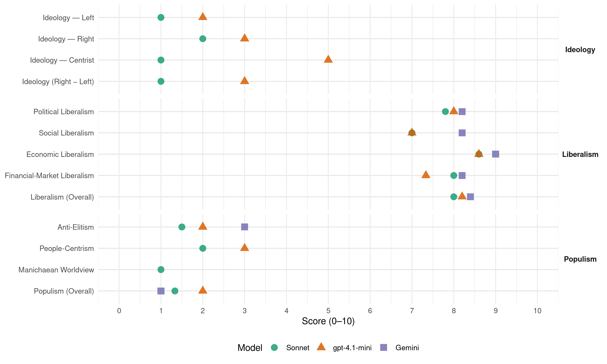

H (Norway, 1989)
manifesto_id 12620_198909
Get full text: This site shows derived annotations and short verbatim quotes only. The full manifesto text is © Manifesto Project / WZB — obtain it via manifesto-project.wzb.eu using the manifesto_id above.
Headline scores
| Dimension | Sonnet | gpt-4.1-mini | Gemini |
|---|---|---|---|
| Populism (Overall) | 1.3 | 2.0 | 1.0 |
| Anti-Elitism | 1.5 | 2.0 | 3.0 |
| People-Centrism | 2.0 | 3.0 | – |
| Manichaean Worldview | 1.0 | – | – |
| Ideology (Right − Left) | 1.0 | 3.0 | – |
| Liberalism (Overall) | 8.0 | 8.2 | 8.4 |
| Political Liberalism | 7.8 | 8.0 | 8.2 |
| Social Liberalism | 7.0 | 7.0 | 8.2 |
| Economic Liberalism | 8.6 | 8.6 | 9.0 |
| Financial-Market Liberalism | 8.0 | 7.3 | 8.2 |
Evidence per dimension
Economic Liberalism
Gemini · score 9.0 · verified · chunk 1
“sosial markedsøkonomi, der ressursfordelingen skjer via markeder”
økonomisk politikk innenfor rammen av en sosial markedsøkonomi, der ressursfordelingen skjer via markeder, men der sosiale hensyn, hensynet
Gemini · score 9.0 · verified · chunk 2
“konkurranse og deregulering”
bedriftene og - konkurranse og deregulering. Målet må være at norsk økonomi
Gemini · score 9.0 · verified · chunk 3
“Høyres miljøpolitikk er forankret i markedsøkonomien”
Høyres miljøpolitikk er forankret i markedsøkonomien. Den bygger på en fornuftig ressurspolitikk
Gemini · score 9.0 · verified · chunk 4
“konkurranse i et åpent marked”
Det må i første rekke skje gjennom konkurranse i et åpent marked. Høyre ser det som ønskelig
Gemini · score 9.0 · verified · chunk 5
“sikre best mulige rammebetingelser for vårt lands sikkerhet og økonomi”
Norge må tilstrebe et godt samarbeid med andre land og på den måten bidra til å sikre best mulige rammebetingelser for vårt lands sikkerhet og økonomi, og for i videre forstand å kunne øve
gpt-4.1-mini · score 9.0 · verified · chunk 1
“Høyre vil føre en økonomisk politikk innenfor rammen av en sosial markedsøkonomi, der ressursfordelingen skjer via markeder, men der sosiale hensyn, hensynet til natur og miljø og nasjonens sikkerhet er ivaretatt gjennom offentlig definerte rammebetingelser.”
Høyre vil føre en økonomisk politikk innenfor rammen av en sosial markedsøkonomi, der ressursfordelingen skjer via markeder, men der sosiale hensyn, hensynet til natur og miljø og nasjonens sikkerhet er ivaretatt gjennom offentlig definerte rammebetingelser. En avgjørende forutsetning for å kunne bevare grunnleggende demokratiske rettigheter- åndsfrihet, ytringsfrihet og retten til å eie - er balanse mellom privat og offentlig sektor.
gpt-4.1-mini · score 9.0 · verified · chunk 2
“marked, konkurranse, næringsliv, skatter, regulering, privatisering, handel”
Topic check: the quote must mention market, competition, business, enterprise, tax, trade, regulation, privatization, or related economic-policy terms.
gpt-4.1-mini · score 8.0 · verified · chunk 3
“Statkraftverkenes organisasjon- og eierform vurderes med sikte på å bringe inn privat kapital”
Statkraftverkenes organisasjon- og eierform vurderes med sikte på å bringe inn privat kapital. Statkraft skal som hovedregel ikke kunne ha majoritet i gasskraftverk og gassrørledninger. Statskrafts eiendomsmasser gjennomgås med sikte på salg av eiendommer det ikke er nødvendig å eie.
gpt-4.1-mini · score 8.0 · verified · chunk 4
“økonomisk politikk og næringspolitikk som bidrar til en positiv utvikling”
Landbruks-, fiskeri-, havbruks- og fritidsnæringen vil være viktige næringer for å opprettholde hovedtrekkene i bosettingsmønsteret. Høyre vil føre en økonomisk politikk og næringspolitikk som bidrar til en positiv utvikling av disse næringene.
gpt-4.1-mini · score 9.0 · verified · chunk 5
“Høyre vil føre en målrettet politikk med sikte på å tilpasse lover, regler og skatte- og avgiftspolitikken til det europeiske handelssamarbeidet”
- Høyre vil føre en målrettet politikk med sikte på å tilpasse lover, regler og skatte- og avgiftspolitikken til det europeiske handelssamarbeidet. For å ivareta norske interesser må Norge via EFTA og direkte overfor de enkelte medlemsland i EF søke å påvirke premissene for det som skal bli det indre marked.
Sonnet · score 9.0 · verified · chunk 1
“Privatisering og økt konkurranse kan gi større innflytelse”
Privatisering og økt konkurranse kan gi større innflytelse til publikum og fremmer effektivitet og omstilling.
Sonnet · score 9.0 · verified · chunk 2
“konkurranse og deregulering”
kompetanseoppbygging, forskning og utvikling, utbygging av infrastruktur, bedring av arbeids- og produksjonsvilkårene for bedriftene og konkurranse og deregulering.
Sonnet · score 8.0 · verified · chunk 3
“Privatskolene gir et verdifullt alternativ”
og supplement til det offentlige skolesystemet. Høyre vil derfor støtte disse skolenes virksomhet.
Sonnet · score 8.0 · verified · chunk 4
“fremme konkurranse mellom institusjonene”
- fremme konkurranse mellom institusjonene for å bedre pasientenes valgmuligheter - gjøre det lønnsomt for helseinstitusjonene
Sonnet · score 9.0 · verified · chunk 5
“økt konkurranse på boligmarkedet”
ytterligere forenkling, og dermed billigere og raskere boligbygging og økt konkurranse på boligmarkedet.
Financial-Market Liberalism
Gemini · score 8.0 · verified · chunk 1
“videreføre liberaliseringen av kredittmarkedet”
renter og kredittpolitikk som stimulerer til konkurranse mellom institusjonene. Høyre vil videreføre liberaliseringen av kredittmarkedet. - Kredittinstitusjonene er forvaltere
Gemini · score 9.0 · verified · chunk 2
“videreføre liberaliseringen av kredittmarkedet”
mellom institusjonene. Høyre vil videreføre liberaliseringen av kredittmarkedet. - Kredittinstitusjonene er forvaltere
Gemini · score 8.0 · verified · chunk 3
“bringe inn privat kapital”
organisasjon- og eierform vurderes med sikte på å bringe inn privat kapital. Statkraft skal som hovedregel
Gemini · score 8.0 · verified · chunk 4
“kredittinstitusjoners rolle i boligfinansieringen styrkes”
Private banker og kredittinstitusjoners rolle i boligfinansieringen styrkes. - Banker og obligasjonsutstedende
Gemini · score 8.0 · verified · chunk 5
“Private banker og kredittinstitusjoners rolle i boligfinansieringen styrkes”
jordvernbestemmelsen må praktiseres slik at byer ikke tvinges til å ta i bruk urimelig dyre utbyggingsområder. - Private banker og kredittinstitusjoners rolle i boligfinansieringen styrkes. - Banker og obligasjonsutstedende foretak må oppmuntres
gpt-4.1-mini · score 7.0 · verified · chunk 1
“Kredittpolitikken må bidra til at ledig kapital settes inn i bedrifter, prosjekter og markeder som gir den beste utnyttelsen av ressursene. Det må derfor føres en markedsorientert rente- og kredittpolitikk som stimulerer til konkurranse mellom institusjonene.”
Kredittpolitikken må bidra til at ledig kapital settes inn i bedrifter, prosjekter og markeder som gir den beste utnyttelsen av ressursene. Det må derfor føres en markedsorientert rente- og kredittpolitikk som stimulerer til konkurranse mellom institusjonene. Høyre vil videreføre liberaliseringen av kredittmarkedet.
gpt-4.1-mini · score 8.0 · verified · chunk 2
“finans, bank, kapital, kreditt, investering, marked, rente, valuta, gjeld, verdipapirer”
Topic check: the quote must mention finance, bank, capital, credit, invest, market, monetary, interest rate, currency, debt, securities, or related financial-system terms.
gpt-4.1-mini · score 7.0 · verified · chunk 3
“Statoil får en friere stilling, og rapporteringsrutiner legges om”
Høyre vil delprivatisere Statoil. Staten skal fortsatt ha majoritetsinteresse i selskapet. Som en konsekvens av dette bør Statoil få en friere stilling, og rapporteringsrutiner legges om. Også statsaksjeselskapets rettigheter og plikter i forhold til myndighetene revurderes på denne bakgrunn.
Sonnet · score 9.0 · verified · chunk 1
“Høyre vil videreføre liberaliseringen av kredittmarkedet”
Det må derfor føres en markedsorientert rente- og kredittpolitikk som stimulerer til konkurranse mellom institusjonene. Høyre vil videreføre liberaliseringen av kredittmarkedet.
Sonnet · score 9.0 · verified · chunk 2
“videreføre liberaliseringen av kredittmarkedet”
Det må derfor føres en markedsorientert rente- og kredittpolitikk som stimulerer til konkurranse mellom institusjonene. Høyre vil videreføre liberaliseringen av kredittmarkedet.
Sonnet · score 7.0 · verified · chunk 3
“bringe inn privat kapital”
Statkraftverkenes organisasjon- og eierform vurderes med sikte på å bringe inn privat kapital.
Sonnet · score 7.0 · verified · chunk 4
“Private banker og kredittinstitusjoners rolle i boligfinansieringen styrkes”
- Private banker og kredittinstitusjoners rolle i boligfinansieringen styrkes. - Banker og obligasjonsutstedende foretak må oppmuntres til å utvikle lånepakker
Sonnet · score 8.0 · verified · chunk 5
“Private banker og kredittinstitusjoners rolle i boligfinansieringen styrkes”
Private banker og kredittinstitusjoners rolle i boligfinansieringen styrkes.
Political Liberalism
Gemini · score 8.0 · verified · chunk 1
“Demokratiske rettigheter, rettssikkerhet og valgfrihet”
likelig fordelt mellom kvinner og menn. Demokratiske rettigheter, rettssikkerhet og valgfrihet er avhengig av en rimelig balanse
Gemini · score 8.0 · verified · chunk 2
“ordinære budsjettbehandlingen i Stortinget”
inntektsoppgjørene klarlegges under den ordinære budsjettbehandlingen i Stortinget. Høyre vil føre en politikk
Gemini · score 8.0 · verified · chunk 3
“sikre foreldrenes innflytelse i grunnskolen”
Høyre vil sikre foreldrenes innflytelse i grunnskolen, bl.a. gjennom foreldrenes direkte deltagelse
Gemini · score 8.0 · verified · chunk 4
“rettsstaten og folkestyret”
Høyre bygger sin politikk på det kristne kulturgrunnlag, rettsstaten og folkestyret. I dette ligger en klar
Gemini · score 9.0 · verified · chunk 5
“fremme menneskerettighetene og idealene i den vestlige, demokratiske samfunnsform”
bidra til å bygge ned motsetningene og spenningen mellom Øst og Vest og fremme menneskerettighetene og idealene i den vestlige, demokratiske samfunnsform. Målet for norsk sikkerhetspolitikk er å sikre
gpt-4.1-mini · score 8.0 · verified · chunk 1
“Demokratiske rettigheter, rettssikkerhet og valgfrihet er avhengig av en rimelig balanse mellom offentlig og privat sektor.”
Demokratiske rettigheter, rettssikkerhet og valgfrihet er avhengig av en rimelig balanse mellom offentlig og privat sektor. Veksten i offentlig sektor, fullmaktslovgivningen og mengden av uoversiktlige styringstiltak øker avmakten og svekker rettssikkerheten.
gpt-4.1-mini · score 7.0 · verified · chunk 2
“demokrati, rettigheter, valg, domstoler, media, regjering, parlament”
Topic check: a verbatim quote for lib_political must mention democracy, rights, elections, courts, media, government, parliament, or a related political-institution term.
gpt-4.1-mini · score 8.0 · verified · chunk 3
“Undervisningssystemet skal skape kunnskapsrike og selvstendige mennesker”
Det må derfor i årene som kommer legges avgjørende vekt på arbeidet med en aktiv og målrettet kunnskapspolitikk. Undervisningssystemet skal skape kunnskapsrike og selvstendige mennesker med evne til videre utvikling. Dette oppnås gjennom formidling av holdninger og verdier og gjennom å utvikle et høyt nivå i kunnskap og ferdigheter.
gpt-4.1-mini · score 8.0 · verified · chunk 4
“Ytringsfrihet og åndsfrihet er forutsetninger for et levende demokrati”
7.4. MEDIEPOLITIKK Ytringsfrihet og åndsfrihet er forutsetninger for et levende demokrati. Høyre vil motarbeide alle former for kultur- og informasjonsmonopoler. Vårt mål er en allsidig mediesituasjon, med et variert tilbud av aviser og tidsskrifter og gode valgmuligheter mellom ulike radio- og fjernsynssendinger.
gpt-4.1-mini · score 9.0 · verified · chunk 5
“Norge må fortsette et målbevisst samarbeid for å styrke FN’s innflytelse”
Norge må fortsette et målbevisst samarbeid for å styrke FN’s innflytelse og anseelse, og for å styrke folkeretten og annen internasjonal rett som grunnlag for staters sameksistens. - Høyre vil stå fast på at folkeretten skal respekteres. Norge må føre en stø og kompromissløs linje når det gjelder respekt for menneskeverdet og menneskers integritet og grunnleggende rettigheter.
Sonnet · score 9.0 · verified · chunk 1
“Demokratiske rettigheter, rettssikkerhet og valgfrihet”
Demokratiske rettigheter, rettssikkerhet og valgfrihet er avhengig av en rimelig balanse mellom offentlig og privat sektor.
Sonnet · score 7.0 · verified · chunk 2
“Organisasjonsfriheten og retten til å være uorganisert”
Organisasjonsfriheten og retten til å være uorganisert må fortsatt sikres. Det må føres en økonomisk politikk som gjør at forhandlingsretten i arbeidsmarkedet er reell.
Sonnet · score 7.0 · verified · chunk 3
“elevdemokrati hvor elevene får større ansvar”
Høyre vil legge vekt på utbyggingen av et godt elevdemokrati hvor elevene får større ansvar for egen læring
Sonnet · score 8.0 · verified · chunk 4
“Ytringsfrihet og åndsfrihet er forutsetninger for et levende demokrati”
7.4. MEDIEPOLITIKK Ytringsfrihet og åndsfrihet er forutsetninger for et levende demokrati. Høyre vil motarbeide alle former for kultur- og informasjonsmonopoler.
Sonnet · score 8.0 · verified · chunk 5
“fremme menneskerettighetene og idealene i den vestlige, demokratiske samfunnsform”
bidra til å bygge ned motsetningene og spenningen mellom Øst og Vest og fremme menneskerettighetene og idealene i den vestlige, demokratiske samfunnsform.
Liberalism (Overall)
Gemini · score 8.0 · verified · chunk 1
“sosial markedsøkonomi, der ressursfordelingen skjer via markeder”
økonomisk politikk innenfor rammen av en sosial markedsøkonomi, der ressursfordelingen skjer via markeder, men der sosiale hensyn, hensynet
Gemini · score 9.0 · verified · chunk 2
“konkurranse og deregulering”
bedriftene og - konkurranse og deregulering. Målet må være at norsk økonomi
Gemini · score 8.0 · verified · chunk 3
“Høyres miljøpolitikk er forankret i markedsøkonomien”
Høyres miljøpolitikk er forankret i markedsøkonomien. Den bygger på en fornuftig ressurspolitikk
Gemini · score 8.0 · verified · chunk 4
“konkurranse i et åpent marked”
Det må i første rekke skje gjennom konkurranse i et åpent marked. Høyre ser det som ønskelig
Gemini · score 9.0 · verified · chunk 5
“sikre best mulige rammebetingelser for vårt lands sikkerhet og økonomi”
Norge må tilstrebe et godt samarbeid med andre land og på den måten bidra til å sikre best mulige rammebetingelser for vårt lands sikkerhet og økonomi, og for i videre forstand å kunne øve
gpt-4.1-mini · score 8.0 · verified · chunk 1
“Høyre vil føre en økonomisk politikk innenfor rammen av en sosial markedsøkonomi, der ressursfordelingen skjer via markeder, men der sosiale hensyn, hensynet til natur og miljø og nasjonens sikkerhet er ivaretatt gjennom offentlig definerte rammebetingelser.”
Høyre vil føre en økonomisk politikk innenfor rammen av en sosial markedsøkonomi, der ressursfordelingen skjer via markeder, men der sosiale hensyn, hensynet til natur og miljø og nasjonens sikkerhet er ivaretatt gjennom offentlig definerte rammebetingelser. En avgjørende forutsetning for å kunne bevare grunnleggende demokratiske rettigheter- åndsfrihet, ytringsfrihet og retten til å eie - er balanse mellom privat og offentlig sektor.
gpt-4.1-mini · score 8.0 · verified · chunk 2
“marked, konkurranse, rettigheter, skatter, finans, bank, kapital, likestilling”
Overall liberalism evidence combining economic, political, social, and financial market aspects.
gpt-4.1-mini · score 8.0 · verified · chunk 3
“Undervisningssystemet skal skape kunnskapsrike og selvstendige mennesker”
Det må derfor i årene som kommer legges avgjørende vekt på arbeidet med en aktiv og målrettet kunnskapspolitikk. Undervisningssystemet skal skape kunnskapsrike og selvstendige mennesker med evne til videre utvikling. Dette oppnås gjennom formidling av holdninger og verdier og gjennom å utvikle et høyt nivå i kunnskap og ferdigheter.
gpt-4.1-mini · score 8.0 · verified · chunk 4
“Ytringsfrihet og åndsfrihet er forutsetninger for et levende demokrati”
7.4. MEDIEPOLITIKK Ytringsfrihet og åndsfrihet er forutsetninger for et levende demokrati. Høyre vil motarbeide alle former for kultur- og informasjonsmonopoler. Vårt mål er en allsidig mediesituasjon, med et variert tilbud av aviser og tidsskrifter og gode valgmuligheter mellom ulike radio- og fjernsynssendinger.
gpt-4.1-mini · score 9.0 · verified · chunk 5
“Norge må fortsette et målbevisst samarbeid for å styrke FN’s innflytelse”
Norge må fortsette et målbevisst samarbeid for å styrke FN’s innflytelse og anseelse, og for å styrke folkeretten og annen internasjonal rett som grunnlag for staters sameksistens. - Høyre vil stå fast på at folkeretten skal respekteres. Norge må føre en stø og kompromissløs linje når det gjelder respekt for menneskeverdet og menneskers integritet og grunnleggende rettigheter.
Sonnet · score 9.0 · verified · chunk 1
“en sosial markedsøkonomi”
Høyre vil føre en økonomisk politikk innenfor rammen av en sosial markedsøkonomi, der ressursfordelingen skjer via markeder, men der sosiale hensyn, hensynet til natur og miljø og nasjonens sikkerhet er ivaretatt gjennom offentlig definerte rammebetingelser.
Sonnet · score 8.0 · verified · chunk 2
“konkurranse og deregulering”
kompetanseoppbygging, forskning og utvikling, utbygging av infrastruktur, bedring av arbeids- og produksjonsvilkårene for bedriftene og konkurranse og deregulering.
Sonnet · score 7.0 · verified · chunk 3
“Høyres miljøpolitikk er forankret i markedsøkonomien”
Den bygger på en fornuftig ressurspolitikk, forvalteransvar og vilje til forpliktende internasjonalt samarbeid.
Sonnet · score 8.0 · verified · chunk 4
“Ytringsfrihet og åndsfrihet er forutsetninger for et levende demokrati”
7.4. MEDIEPOLITIKK Ytringsfrihet og åndsfrihet er forutsetninger for et levende demokrati. Høyre vil motarbeide alle former for kultur- og informasjonsmonopoler.
Sonnet · score 8.0 · verified · chunk 5
“Bildriften søkes privatisert”
For å konsentrere NSB’s virksomhet vil Høyre ta initiativet til følgende tiltak: - Bildriften søkes privatisert.
Anti-Elitism
Gemini · score 3.0 · verified · chunk 1
“organisasjonene og sektorinteressenes økte innflytelse”
svekket blant annet som følge av en større og mer uoversiktlig offentlig sektor, og av organisasjonene og sektorinteressenes økte innflytelse. Myndighetene må anerkjenne
gpt-4.1-mini · score 2.0 · verified · chunk 1
“Folkevalgte organers evne til helhetsstyring er svekket blant annet som følge av en større og mer uoversiktlig offentlig sektor, og av organisasjonene og sektorinteressenes økte innflytelse.”
Folkevalgte organers evne til helhetsstyring er svekket blant annet som følge av en større og mer uoversiktlig offentlig sektor, og av organisasjonene og sektorinteressenes økte innflytelse. Myndighetene må anerkjenne organisasjonenes egenart, selvstendighet og interesser, samtidig som organisasjonene må respektere organisasjonsfriheten og folkestyrets suverenitet.
Sonnet · score 2.0 · verified · chunk 1
“organisasjonene og sektorinteressenes økte innflytelse”
Folkevalgte organers evne til helhetsstyring er svekket blant annet som følge av en større og mer uoversiktlig offentlig sektor, og av organisasjonene og sektorinteressenes økte innflytelse.
Sonnet · score 1.0 · mixed · chunk 2
“Private og offentlige monopoler og karteller”
Konkurransepolitikken må intensiveres. Private og offentlige monopoler og karteller må overvåkes nøye og om mulig oppløses
Sonnet · score 1.0 · mixed · chunk 3
“Høyre vil delprivatisere Statoil”
Staten skal fortsatt ha majoritetsinteresse i selskapet. Som en konsekvens av dette bør Statoil få en friere stilling
Sonnet · score 1.0 · mixed · chunk 4
“folkestyret”
Høyre bygger sin politikk på det kristne kulturgrunnlag, rettsstaten og folkestyret. I dette ligger en klar erkjennelse
Sonnet · score 1.0 · verified · chunk 5
“Tvangsmidler som offentlig boligformidling”
Tvangsmidler som offentlig boligformidling og alminnelig kommunal forkjøpsrett avvises.
Ideology — Centrist
gpt-4.1-mini · score 5.0 · verified · chunk 1
“Den enkelte må oppmuntres til å ta større personlig ansvar. Ved at private overtar oppgaver, frigjøres midler til å styrke den offentlige innsatsen på sentrale velferdsområder.”
Høyre vil styrke den private sektor i økonomien. Flere oppgaver må løses av private, og den enkelte må oppmuntres til å ta større personlig ansvar. Ved at private overtar oppgaver, frigjøres midler til å styrke den offentlige innsatsen på sentrale velferdsområder, samtidig som skattenivået kan reduseres.
Sonnet · score 1.0 · verified · chunk 1
“folk flest mulighet til å føle seg trygge”
disse må gis en bemanning og utrustning som gjør dem i stand til å ivareta sine oppgaver på en effektiv måte, og til å gi folk flest mulighet til å føle seg trygge.
Sonnet · score 1.0 · verified · chunk 5
“Høyre vil arbeide mot dette mål”
norsk medlemskap å være den tilknytningsform som i fremtiden vil ivareta norske interesser best. Høyre vil arbeide mot dette mål.
Ideology — Left
gpt-4.1-mini · score 2.0 · verified · chunk 1
“En sosial markedsøkonomi, der ressursfordelingen skjer via markeder, men der sosiale hensyn, hensynet til natur og miljø og nasjonens sikkerhet er ivaretatt gjennom offentlig definerte rammebetingelser.”
Hovedelementene i Høyres politikk for å styrke demokratiet, friheten og det personlige ansvaret er: - å befeste rettsstaten - en sosial markedsøkonomi - bedre balanse mellom privat og offentlig sektor - rammestyring og mindre offentlig detaljregulering - styrking av fellesinteressene og helhetsstyringen - effektivisering av offentlig sektor - økt desentralisering av beslutningsmyndighet og ansvar Høyre vil føre en økonomisk politikk innenfor rammen av en sosial markedsøkonomi, der ressursfordelingen skjer via markeder, men der sosiale hensyn, hensynet til natur og miljø og nasjonens sikkerhet er ivaretatt gjennom offentlig definerte rammebetingelser.
Sonnet · score 1.0 · verified · chunk 1
“Høyre avviser lønnstakerfond og andre lignende”
Høyre avviser lønnstakerfond og andre lignende, kollektive former for eierskap.
Sonnet · score 1.0 · verified · chunk 5
“Subsidiene i boligmarkedet må i første rekke”
Subsidiene i boligmarkedet må i første rekke rettes mot dem som trenger det mest.
Ideology (Right − Left)
gpt-4.1-mini · score 3.0 · verified · chunk 1
“Den enkelte må oppmuntres til å ta større personlig ansvar. Ved at private overtar oppgaver, frigjøres midler til å styrke den offentlige innsatsen på sentrale velferdsområder.”
Høyre vil styrke den private sektor i økonomien. Flere oppgaver må løses av private, og den enkelte må oppmuntres til å ta større personlig ansvar. Ved at private overtar oppgaver, frigjøres midler til å styrke den offentlige innsatsen på sentrale velferdsområder, samtidig som skattenivået kan reduseres.
Sonnet · score 1.0 · verified · chunk 1
“Høyre avviser lønnstakerfond og andre lignende”
Høyre avviser lønnstakerfond og andre lignende, kollektive former for eierskap.
Sonnet · score 1.0 · verified · chunk 2
“økt internasjonalisering av norsk næringsliv”
Høyre vil føre en politikk for å fremme økt internasjonalisering av norsk næringsliv, for derved å styrke arbeidsplassene i Norge.
Sonnet · score 1.0 · verified · chunk 3
“Høyre vil delprivatisere Statoil”
Staten skal fortsatt ha majoritetsinteresse i selskapet. Som en konsekvens av dette bør Statoil få en friere stilling
Sonnet · score 1.0 · verified · chunk 4
“Innvandringsstoppen for såkalt arbeidsinnvandring opprettholdes”
I overensstemmelse med disse prinsipper vil Høyre legge vekt på følgende: - Innvandringsstoppen for såkalt arbeidsinnvandring opprettholdes.
Sonnet · score 1.0 · verified · chunk 5
“Bildriften søkes privatisert”
For å konsentrere NSB’s virksomhet vil Høyre ta initiativet til følgende tiltak: - Bildriften søkes privatisert.
Ideology — Right
gpt-4.1-mini · score 3.0 · verified · chunk 1
“Norge må aktivt tilpasse seg, påvirke og delta i den internasjonale utvikling både på det økonomiske, teknologiske og kulturelle området.”
Landegrensene får stadig mindre betydning, og vi blir mer avhengige av det internasjonale samfunn. Norge må aktivt tilpasse seg, påvirke og delta i den internasjonale utvikling både på det økonomiske, teknologiske og kulturelle området. Høyre vil arbeide for at Norge blir medlem av EF.
Sonnet · score 2.0 · verified · chunk 1
“Høyre bygger sin politikk på det kristne kulturgrunnlag”
Høyre bygger sin politikk på det kristne kulturgrunnlag. Vår kulturs verdinormer har sitt utgangspunkt i en felles historie, tradisjoner og erfaringer.
Sonnet · score 2.0 · verified · chunk 2
“økt internasjonalisering av norsk næringsliv”
Høyre vil føre en politikk for å fremme økt internasjonalisering av norsk næringsliv, for derved å styrke arbeidsplassene i Norge.
Sonnet · score 2.0 · verified · chunk 3
“Tospråklige elever må sikres en grundig undervisning i norsk”
slik at de stilles på lik linje med andre elever i sin skolegang. Når man behersker morsmålet og norsk tilstrekkelig
Sonnet · score 2.0 · verified · chunk 4
“Innvandringsstoppen for såkalt arbeidsinnvandring opprettholdes”
I overensstemmelse med disse prinsipper vil Høyre legge vekt på følgende: - Innvandringsstoppen for såkalt arbeidsinnvandring opprettholdes.
Sonnet · score 2.0 · verified · chunk 5
“fortsatt medlemskap i den vestlige forsvarsalliansen”
baseres på et nasjonalt forsvar og fortsatt medlemskap i den vestlige forsvarsalliansen, NATO.
Manichaean Worldview
Sonnet · score 1.0 · verified · chunk 1
“Offentlig byråkrati, reguleringer og fullmaktslover er en fare”
Offentlig byråkrati, reguleringer og fullmaktslover er en fare for rettssikkerheten og hemmer utviklingen av et lønnsomt og fremtidsrettet næringsliv.
Sonnet · score 1.0 · verified · chunk 5
“Øst / Vest-konflikten”
mer normalt samkvem mellom land og folk som omfattes av Øst / Vest-konflikten.
People-Centrism
gpt-4.1-mini · score 3.0 · verified · chunk 1
“Et åpnere samfunn som gir den enkelte større muligheter, større frihet og større trygghet.”
Høyre vil ha et åpnere samfunn som gir den enkelte større muligheter, større frihet og større trygghet. Samfunnsproblemer kan ikke løses med lover og regler alene, men må møtes med tillit til den enkelte, personlig frihet og ansvar.
Sonnet · score 2.0 · verified · chunk 1
“folk flest mulighet til å føle seg trygge”
disse må gis en bemanning og utrustning som gjør dem i stand til å ivareta sine oppgaver på en effektiv måte, og til å gi folk flest mulighet til å føle seg trygge.
Sonnet · score 2.0 · verified · chunk 2
“Høy prisstigning rammer vanlige lønnsmottagere”
Høy prisstigning rammer vanlige lønnsmottagere, pensjonister og andre trygdede sterkest.
Sonnet · score 2.0 · verified · chunk 3
“Eleven må stå i sentrum”
Skolen må vise hver elev omsorg ved å gi den enkelte utfordringer og mål å strekke seg mot. Eleven må stå i sentrum.
Sonnet · score 2.0 · verified · chunk 4
“Brukerne - pasientene - må settes i sentrum”
Helsevesenet må ha klare servicemål. Brukerne - pasientene - må settes i sentrum. Helsevesenets behandlingstilbud
Sonnet · score 2.0 · verified · chunk 5
“brukerne kan sikres gode og rimelige tjenester”
slik at brukerne kan sikres gode og rimelige tjenester, må Postverkets organisasjon bygge på
Populism (Overall)
Gemini · score 1.0 · verified · chunk 1
“organisasjonene og sektorinteressenes økte innflytelse”
svekket blant annet som følge av en større og mer uoversiktlig offentlig sektor, og av organisasjonene og sektorinteressenes økte innflytelse. Myndighetene må anerkjenne
gpt-4.1-mini · score 2.0 · verified · chunk 1
“Folkevalgte organers evne til helhetsstyring er svekket blant annet som følge av en større og mer uoversiktlig offentlig sektor, og av organisasjonene og sektorinteressenes økte innflytelse.”
Folkevalgte organers evne til helhetsstyring er svekket blant annet som følge av en større og mer uoversiktlig offentlig sektor, og av organisasjonene og sektorinteressenes økte innflytelse. Myndighetene må anerkjenne organisasjonenes egenart, selvstendighet og interesser, samtidig som organisasjonene må respektere organisasjonsfriheten og folkestyrets suverenitet.
Sonnet · score 2.0 · verified · chunk 1
“organisasjonene og sektorinteressenes økte innflytelse”
Folkevalgte organers evne til helhetsstyring er svekket blant annet som følge av en større og mer uoversiktlig offentlig sektor, og av organisasjonene og sektorinteressenes økte innflytelse.
Sonnet · score 1.0 · verified · chunk 2
“Høy prisstigning rammer vanlige lønnsmottagere”
Høy prisstigning rammer vanlige lønnsmottagere, pensjonister og andre trygdede sterkest.
Sonnet · score 1.0 · mixed · chunk 3
“Høyre vil delprivatisere Statoil”
Staten skal fortsatt ha majoritetsinteresse i selskapet. Som en konsekvens av dette bør Statoil få en friere stilling
Sonnet · score 1.0 · mixed · chunk 4
“Brukerne - pasientene - må settes i sentrum”
Helsevesenet må ha klare servicemål. Brukerne - pasientene - må settes i sentrum. Helsevesenets behandlingstilbud
Sonnet · score 1.0 · verified · chunk 5
“brukerne kan sikres gode og rimelige tjenester”
slik at brukerne kan sikres gode og rimelige tjenester, må Postverkets organisasjon bygge på
Social Liberalism